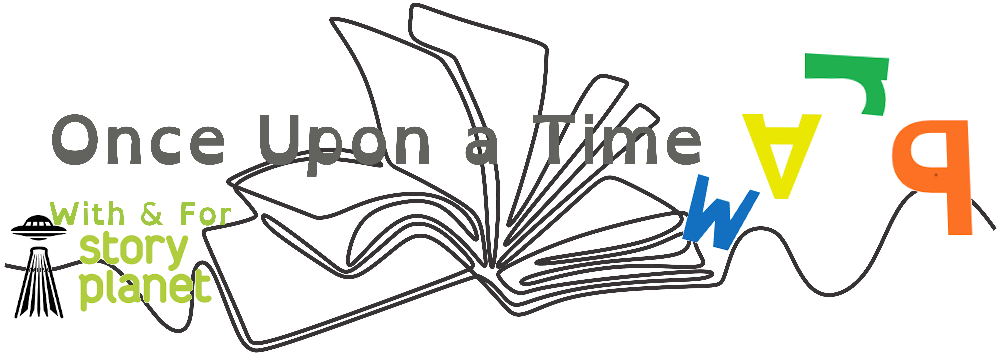

Need a text-to-speech tool to read this page? We suggest downloading the
Talkie extension for Google Chrome.

Who We Are
Once Upon a Time Warp is a York University based project created through the Cross-Campus Capstone Classroom course and affiliated with Story Planet.
Story Planet is a non-profit organization dedicated to improving literacy skills whilst sharing typically unheard voices. Through workshops, facilitators encourage learning and respect of different story forms through reception of those forms. By offering access to different story forms, Story Planet hopes to normalize empathy, tolerance, and inclusivity among children, schools, and communities. We hope to foster these outcomes by researching and developing Story Planet’s challenge question.
The Once Upon a Time Warp executive team is comprised of six fourth year students who specialize in various fields such as Media Arts, Anthropology, Educational Studies, Psychology, English and Professional Writing, Law and Society, and International Development Studies.
What is the goal of this website?
The purpose of the Once Upon a Time Warp website is to provide accessible resources for students in grades 3-7 that will empower them to look at storytelling in a way that may not fit into the normalized styles of story structure often taught in schools. We also want to provide educators with information to help their students open up new creative avenues in their minds in order to get them thinking about the world outside of binary conventions. We want to show kids that there are many more ways to tell a story that can't be defined as “right” or “wrong” and melds more cohesively with the ways children tell stories naturally. The goal of this website from this point on is to gather as many examples of stories and story forms from different cultures and time periods to help reinforce the fact that there are many important, interesting works that either don’t or don’t fully embrace Western conventions of storytelling.
Our Guiding Question
How do we collect, curate, and make accessible stories that are non-colonial in form (don’t follow beginning, middle, and end; hero’s journey; or conflict-based arcs), so that we can share those structures with students in grades 3 to 7?
Why is it important to teach non-linear, non-colonial forms of storytelling?
If you've ever heard a child tell a story, you know that they aren't necessarily concerned with the chronology, characters, or in-depth explanations. Is this way of storytelling wrong? What defines "wrong" or "right" storytelling? Is it the fault of the author that the readers don't feel satisfied with the story? Or does the fault lie with those who have put expectations on the story because of what they feel should be included?
Categorizing stories and story forms is not simple. In our research, we came across many stories that both fit and didn't fit certain criteria we imagined were necessary to define "non-linear" and "non-colonial" stories. This inability to easily answer the question of "what makes a non-linear/non-colonial story or story form" was a driving force behind much of our research.
This website was the product of opening our research up to the idea that the stories we were trying to find simply provide a new outlook on storytelling for children to explore. This could be anything from stories from different places that have the same message or stories that can exist without some of the aspects we normally expect from a story, such as characters, narration, or a linear plot. The goal of this, is also to move away from the idea that there is such thing as a “good” or “bad” story depending on the aspects that they do or don’t have. In this way, we can challenge the idea that an author has to give the reader something satisfying (like characters or an ending) in order to enjoy a story. Our story collection is focused on forms that can be considered non-linear, non-colonial, or simply upset the expectations readers have for stories. On this website, we have collected literature, oral stories (through video and audio recordings), and things like picture books or oral stories with visual aides that defy the “norm” of Western storytelling and facilitate a more diverse view and understanding of what children's storytelling can be.